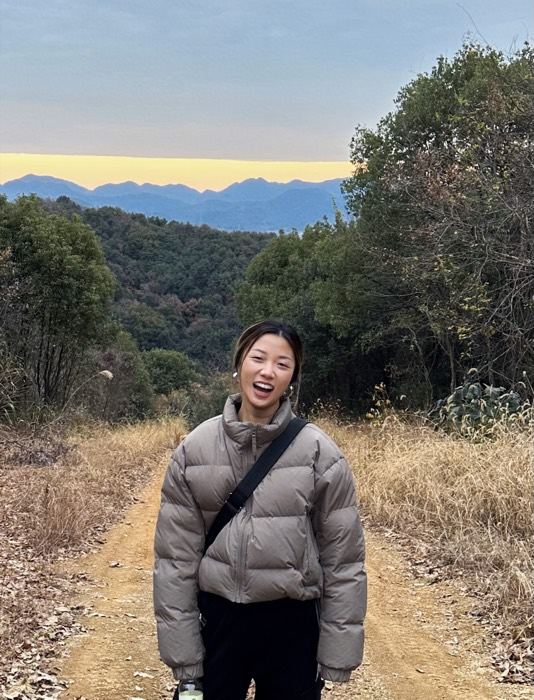
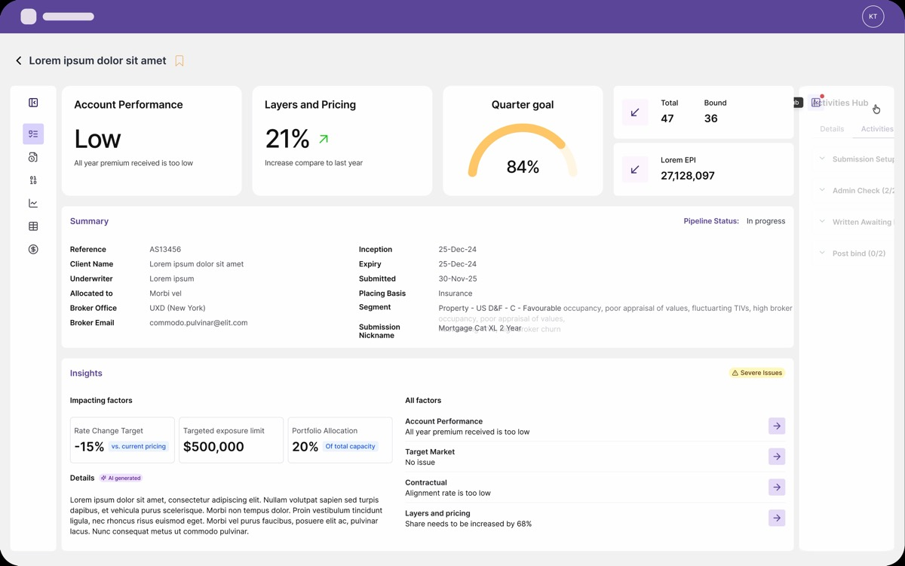

Drag to try values against the real images, at real size. Nothing here touches the site — when you settle on numbers, tell Claude and they get applied to the stylesheet. The faded copy beside each one is what is live right now, for comparison.
Currently 16px (--r-lg) in .about-photo,
assets/css/home.css. Shown at its real 260px width.

trying 16px
live now 16px
Two radii, not one: the white card is 40px and the media inside is 36px. They differ by the 4px white frame so the curves stay concentric — nest a 36px corner inside a 40px one with 4px between and the two arcs stay parallel. Keep the lock on and the inner value follows. Hover the card to see the video, same as the real homepage.

trying 40 / 36px — hover for the video
live now 40 / 36px
What Claude would edit once you have picked. Read it, or copy it into chat.